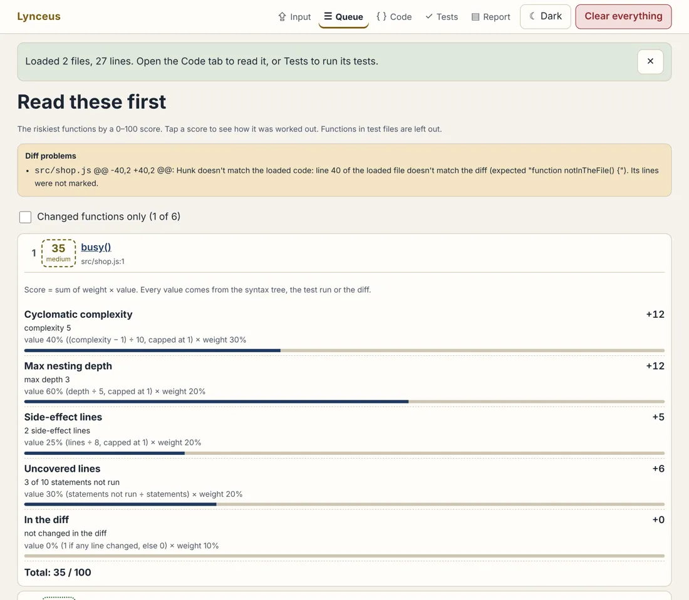
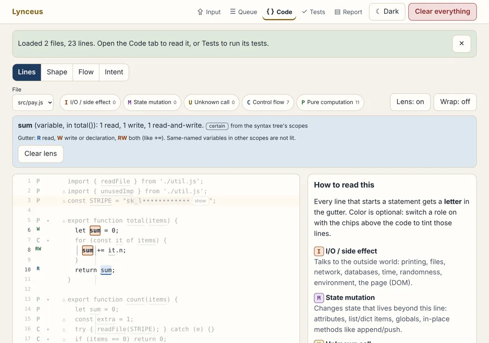

Lynceus
A private code-review tool that runs entirely in the browser — load someone else's Python or JavaScript, run its tests on your own device, and get a ranked, evidence-based review. No code ever leaves the device.
Built with Claude under my direction · Svelte 5, TypeScript, Vite, Python in WebAssembly (Pyodide), Web Workers

What it does
- Drag in files or a folder, or paste code and a diff.
- Runs the project's own tests in a sandbox with the network switched off, with per-test coverage and time limits.
- Read-first queue: each function gets a 0–100 risk score from six measured factors — complexity, nesting, side effects, uncovered lines, changed in the diff, and ran during a failing test.
- Four reading passes (Lines, Shape, Flow, Intent), a variable lens, extra checks for unused code, duplicates and leaked secrets, and a report you can download or print.

Privacy by design
- Code lives in page memory only; closing the tab forgets it. One button clears everything.
- A strict content-security policy, and the test sandbox blocks the network before any loaded code runs.
- Works offline after the first visit. Python support downloads only when you ask for it.
Testing
- 232 unit tests and 129 end-to-end browser checks passing (v1.1).
- Every push builds, tests and publishes the site automatically.